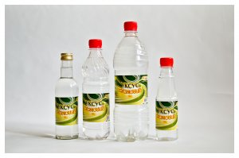
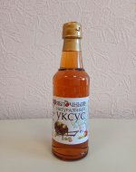
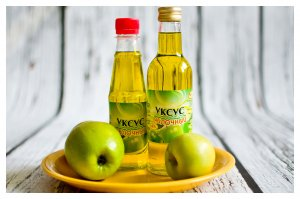

ООО "Сибирский Уксус" - ведущий производитель уксусной продукции в Сибирском регионе. Компания специализируется на производстве широкого ассортимента уксусной продукции, натуральных сиропов и инновационных продуктов питания.
Продукция:
-

Уксус столовый
Столовый уксус 9% – бюджетный, популярный вариант пищевой добавки, простой продукт, содержащий в своем составе уксусную кислоту и питьевую воду. Широко используется как в домашней кулинарии, так и в пищевом производстве.
Применение:
- Консервирование овощей и фруктов
- Маринование мяса, птицы, рыбы
- Приготовление салатных заправок
- Изготовление подливок и соусов
- Использование в супах и выпечке
Фасовка:
- Стеклянные бутылки 250 мл
- Пластиковые бутылки 250 мл, 500 мл, 1000 мл
- Промышленная тара 20-1000 кг
Доступные концентрации:
- 6%
- 9%
- 10%
-

Уксус яблочный натуральный 6%
Натуральный продукт, изготовленный в соответствии с ГОСТ путем окисления сброженного натурального яблочного сока чистой культурой бактерий Acetobacter aceti. Благодаря биотехнологии сохраняет витамины, микроэлементы и аминокислоты.
Применение:
- Консервирование и маринование
- Салатные заправки
- Приготовление горячих блюд
- Легкие салаты из листовых зеленых овощей
- Блюда из мяса и птицы
- Блюда из нежирной рыбы и морепродуктов
Полезные свойства:
- Подавляет аппетит
- Снижает тягу к сладкому
- Можно использовать как освежающий напиток (1-2 ч.л. на стакан воды)
Фасовка:
- Пластиковые бутылки 250 мл
- Пластиковые бутылки 350 мл
- Пластиковые бутылки 500 мл
-

Уксус яблочный (зеленое яблоко)
Уксус столовый ароматизированный яблочный 6% используется для придания блюдам яблочных оттенков вкуса. Широко используется в домашней кулинарии и пищевом производстве как консервирующая добавка, ингредиент маринадов.
Применение:
- Хрустящая капуста и листовые овощи
- Выпечка (шарлотка)
- Консервирование овощей и фруктов
- Салатные заправки
- Соусы
- Десерты
Варианты:
- Зеленое яблоко
- Красное яблоко
Фасовка:
- Стеклянные бутылки
- Пластиковые бутылки
- Промышленная тара 1-1000 кг